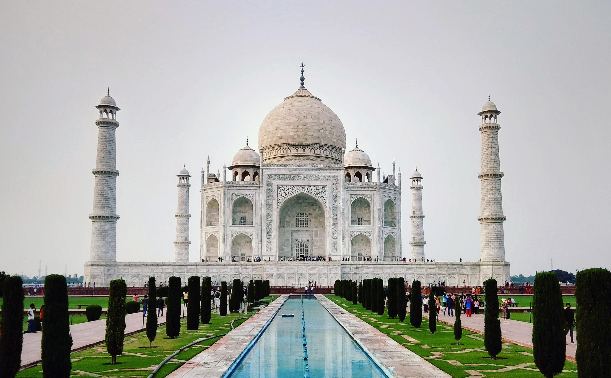
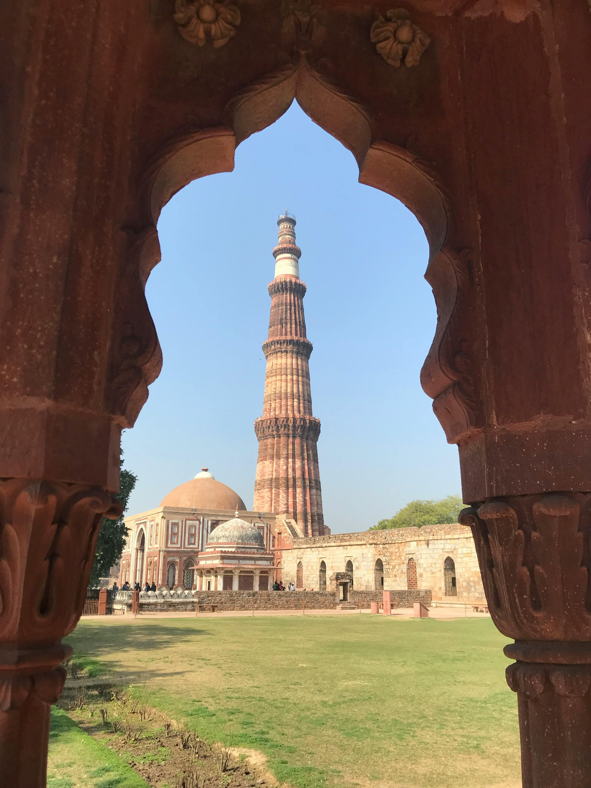
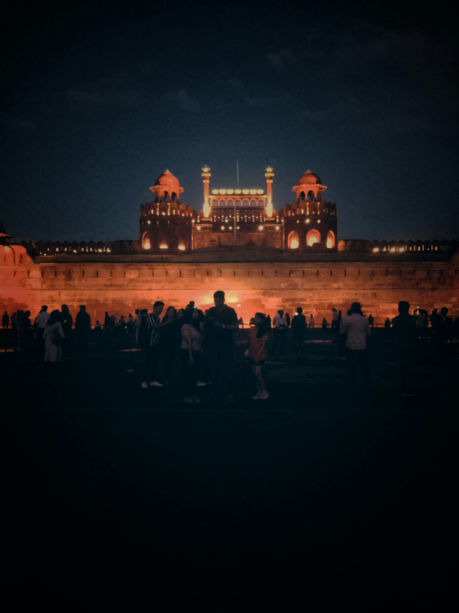
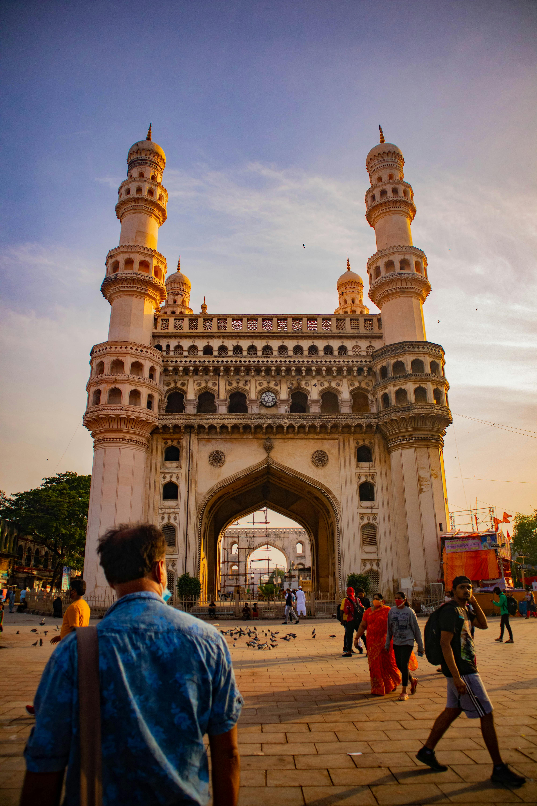
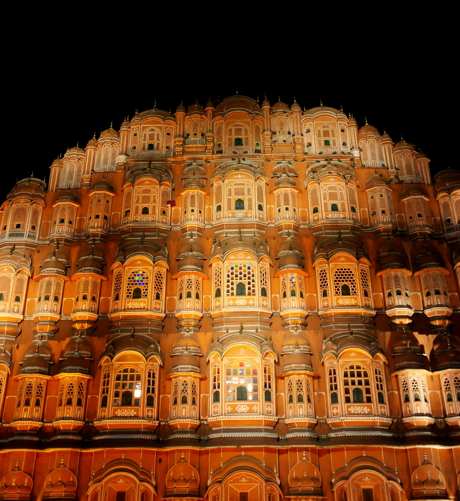

Monuments of India

Taj Mahal
The Taj Mahal is an ivory-white marble mausoleum in Agra.

Qutub Minar
The Qutub Minar is a minaret that forms part of the Qutub complex in Delhi.

Red Fort
Red Fort is a historic fort in Delhi, India, made of red sandstone.

Golden Temple
Golden Temple is a famous Sikh temple in Amritsar, covered in gold.

Charminar
Charminar is a historic monument with four minarets in Hyderabad, India.

Hawa Mahal
Hawa Mahal is a palace in Jaipur, India, with many windows.